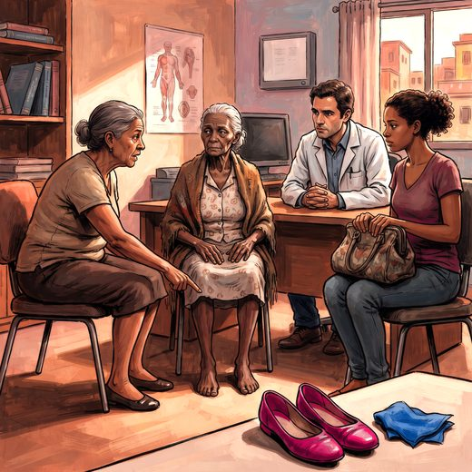

Consulta rápida à beira do leito
Condutas, doses e interações.
Referências da aula · 8
- Schilling LP, Balthazar MLF, Radanovic M, et al. Diagnóstico da doença de Alzheimer: recomendações do Departamento Científico de Neurologia Cognitiva e do Envelhecimento da Academia Brasileira de Neurologia. Dement Neuropsychol. 2022;16(3 Suppl 1):25-39.
- Clarfield AM. The decreasing prevalence of reversible dementias: an updated meta-analysis. Arch Intern Med. 2003;163(18):2219-29.
- Hakim S, Adams RD. The special clinical problem of symptomatic hydrocephalus with normal cerebrospinal fluid pressure: observations on cerebrospinal fluid hydrodynamics. J Neurol Sci. 1965;2(4):307-27.
- Luciano MG, Holubkov R, Zwimpfer T, et al. A randomized trial of ventriculoperitoneal shunting for idiopathic normal-pressure hydrocephalus (PENS). N Engl J Med. 2025;393(22):2198-2209. doi:10.1056/NEJMoa2503109.DOI
- Nakajima M, Yamada S, Miyajima M, et al. Guidelines for management of idiopathic normal pressure hydrocephalus (third edition): endorsed by the Japanese Society of Normal Pressure Hydrocephalus. Neurol Med Chir (Tokyo). 2021;61(2):63-97.
- 2023 American Geriatrics Society Beers Criteria® Update Expert Panel. American Geriatrics Society 2023 updated AGS Beers Criteria® for potentially inappropriate medication use in older adults. J Am Geriatr Soc. 2023;71(7):2052-81.
- Freitas EV, Py L, organizadores. Tratado de Geriatria e Gerontologia. 5ª ed. Rio de Janeiro: Guanabara Koogan; 2022.
- Linhares Junior JD. Casos clínicos ilustrativos construídos para as aulas, a partir da prática clínica geriátrica. In: Pós-graduação em Geriatria 2.0. Afya; 2026.
Documentos oficiais
Leis e publicações do Ministério da Saúde sobre o cuidado da pessoa idosa, de acesso livre.
Abrir os documentos